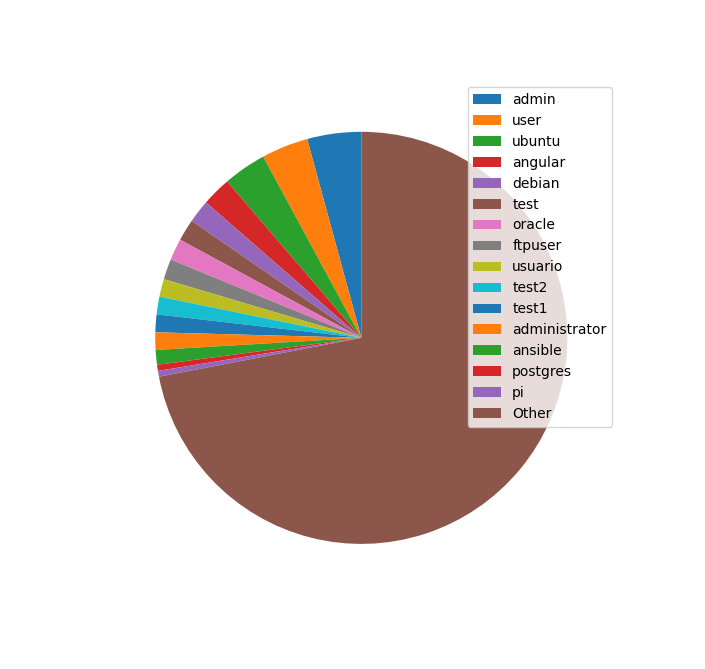
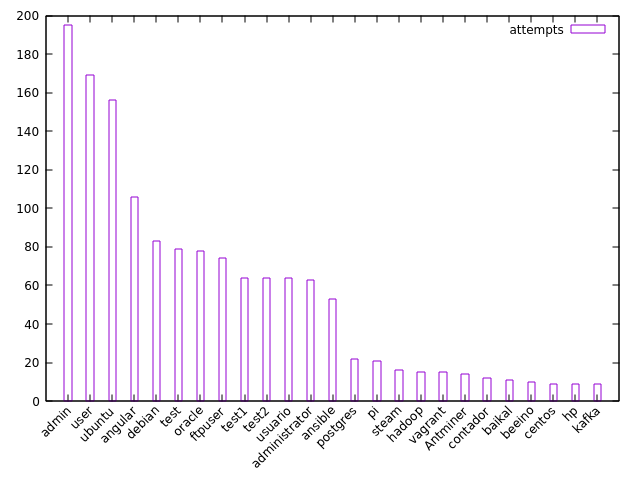
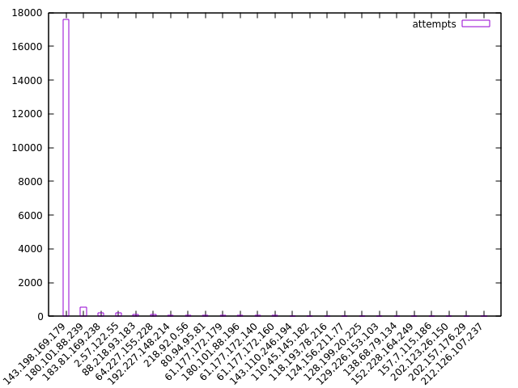
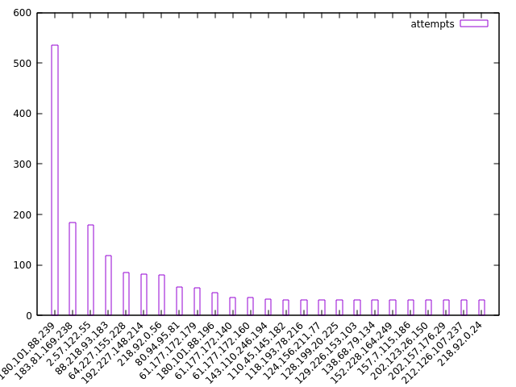
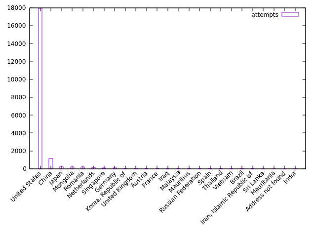
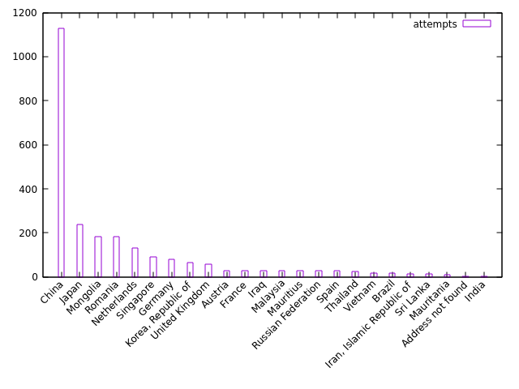

SSH login attempt analysis
2024-06-16
I left the SSH port on my DigitalOcean droplet open for a while (since September 16 2023, so exactly 9 months now). Time to take a look at who tried to log in!
Disclaimer: I suck at shell scripting, and there is a lot of shell scripting/oneliner creation in here that could definitely be optimized more.
Usernames
First, I wanted to see what usernames were attempted. I have two users on my droplet -
root and a personal user account. The personal username did not get used in any of the
attempts made by third parties, but root got a ton of attempts. In fact, the number of
attempts to log in to root dwarfs all the other attempts combined:
bash
$ sudo grep "Failed password for root" /var/log/auth.log | wc -l
20383
$sudo grep "Failed password for invalid user" /var/log/auth.log | wc -l
5019
The file /var/log/auth.log keeps logs of all login attempts (whether they succeeded or
failed). Here, we're looking for the patterns "Failed password for root" and
"Failed password for invalid user" with the command grep, and passing the
lines that contain that pattern to wc -l, which counts (c) the number of
lines (-l) passed to it.
We'll get back to the root attempts later.
Here is a pie chart of the non-root users:

I made this pie chart in Python with matplotlib and the following code:
from matplotlib import pyplot as plt
with open('ssh_username_attempts.txt', 'r') as f:
usernames = []
counts = []
both = []
for line in f.readlines():
count, username = line.strip().split()
both.append((int(count), username))
both.sort(reverse=True)
for count, username in both:
usernames.append(username)
counts.append(count)
N = 15
username_subset = usernames[:N]
count_subset = counts[:N]
other_counts = sum(counts[N:])
print(username_subset)
print(count_subset)
plt.xticks(rotation=45)
plt.yticks(range(0, max(counts),10))
patches, texts = plt.pie(count_subset + [other_counts], startangle=90)
plt.legend(patches, username_subset+['Other'], loc="best")
plt.show()
But this was rather cumbersome, and not very portable; rather than writing a script, I wanted to have a cli oneliner to whip out whenever I needed to see this for any server. I decided to use gnuplot instead. Here is that plot:

Here's the oneliner for it:
bash
$ sudo awk '/Failed password for invalid user/ { print $(NF-5)}' /var/log/auth.log | sort | uniq -c | sort -k1nr | head -25 | gnuplot -p -e "set xtics rotate by 45 right; plot '<cat' using 1: xtic(2) title 'attempts' with histogram"
Or if that's too much, you can put the counts and values into a temp file first, and then put that into gnuplot:
bash
$ sudo awk '/Failed password for invalid user/ { print $(NF-5)}' /var/log/auth.log | sort | uniq -c > tmp.txt
$ cat tmp.txt | sort -k1nr | head -25 | gnuplot -p -e "set xtics rotate by 45 right; plot '<cat' using 1: xtic(2) title 'attempts' with histogram"
How does this oneliner work?
sudo awk '/Failed password for invalid user/ { print $(NF-5)}' /var/log/auth.log
This command calls awk, a text editing program, with the argument
'/Failed password for invalid user/ { print $(NF-5)}' on our file
/var/log/auth.log. In awk, the variable NF refers to the last
field of the line, so $(NF-5) refers to the field 5 before the last one. For example:
bash
$ echo "1 2 3 4 5 6 7 8" | awk '{print $(NF-5)}'
3
sort | uniq -c
This command sorts the data and then removes repeated lines, and counts the number of repeated lines.
If we just called uniq, it wouldn't be enough because there could be duplicate lines
that are non-adjacent. Calling sort first ensures that all duplicate lines are grouped
together. A couple examples:
bash
$ echo "1
2
2
2
3
2
1" | uniq
1
2
3
2
1
$ echo "1
2
2
2
3
2
1" | sort | uniq
1
2
3
$ echo "1
2
2
2
3
2
1" | sort | uniq -c
2 1
4 2
1 3
sort -k1nr | head -25
This command sorts the first field (k1, or key 1) numerically (n, so that
11 comes before 100 and not after it) in reversed (descending) order
(r).
head -25 takes the first 25 lines of what is passed in.
gnuplot -p -e "set xtics rotate by 45 right; plot '<cat' using 1: xtic(2) title 'attempts' with histogram"
This long gnuplot command can be broken into the following:
-p: persist the plot window even after the main gnuplot program exits-e: execute the given string as a command"set xtics rotate by 45 right; plot '<cat' using 1: xtic(2) title 'attempts' with histogram": a command, which does the following:set xtics rotate by 45 right: rotate the x-ticks 45 degrees from the right side, so that they don't overlap each other (which would happen if they were all side-by-side horizontally)plot '<cat': plot using standard input (the input passed/piped in by our previous commands)using 1: xtic(2): plot the first field on the y-axis and use the second field as the x-tickstitle 'attempts': set the data label toattempts, rather than the default (which would be the entireplot '<cat' ...command)with histogram: create a 2d bar chart with parallel columns (not necessarily restricted to histograms)
IP addresses and countries
Now let's look at the IP addresses (and countries) of our would-be attackers. To make things simple,
let's just focus on the attempts to log in as root.
Here's a plot of the top 25 IP addresses by number of attempts:

The top one has tried to log in nearly 18,000 times! Let's get rid of it and look at the rest:

Didn't save the code for these plots, but should be easy to figure out what it was from context.
Here's the more important part: the countries associated with each IP address:

Looks like we know where the top IP is based - the United States. This guy is apparently a known attacker and appears on several blocklists. Maybe I should block him too?
Here are the top 25 countries minus the United States:

Lots of login attempts from China, which is expected.
Here is the code for generating the country plots, first as a oneliner and then as a series of commands.
Oneliner:
bash
$ sudo awk '/Failed password for root/ { print $(NF-3) }' /var/log/auth.log | sort | xargs -L 1 geoiplookup | cut -d " " -f 1-4 --complement | sort | uniq -c | sort -k1nr | head -25 | awk '{$1=$1};1' | awk '{sub(" ","|")}1' | awk '{split($0,a,"|"); print a[1] " \"" a[2] "\""}' | gnuplot -p -e "set xtics rotate by 45 right; plot '<cat' using 1: xtic(2) title 'attempts' with histogram"
Series of commands:
bash
$ sudo awk '/Failed password for root/ { print $(NF-3) }' /var/log/auth.log | sort > ssh_ip_attempts_all.txt
$ cat ssh_ip_attempts_all.txt | xargs -L 1 geoiplookup | cut -d " " -f 1-4 --complement | sort | uniq -c | sort -k1nr | head -25 > top_25_countries.txt
$ cat top_25_countries.txt | awk '{$1=$1};1' | awk '{sub(" ","|")}1' | awk '{split($0,a,"|"); print a[1] " \"" a[2] "\""}' | gnuplot -p -e "set xtics rotate by 45 right; plot '<cat' using 1: xtic(2) title 'attempts' with histogram"
This command takes a bit longer because it's doing a bunch of database lookups with the
geoiplookup command (from the geoip-bin Debian package in my case). The
package comes with a database (possibly outdated?) that maps IP addresses to countries, which is
nice. There are more granular databases that you can download from MaxMind or from GitHub that have
data at the city or ASN levels, but for my purposes country was fine.
Let's unpack this command too, this time using the series of commands as a reference:
sudo awk '/Failed password for root/ { print $(NF-3) }' /var/log/auth.log | sort > ssh_ip_attempts_all.txt
Nothing new here. Just using awk to get the 4th-from-last field (which happens to be the
IP address) in the root login failures stored in /var/log/auth.log. We
then sort these by IP and stick them in the file ssh_ip_attempts_all.txt.
cat ssh_ip_attempts_all.txt | xargs -L 1 geoiplookup | cut -d " " -f 1-4 --complement | sort | uniq -c | sort -k1nr | head -25 > top_25_countries.txt
The complicated parts are contained here:
xargs -L 1 geoiplookup | cut -d " " -f 1-4 --complement
xargs -L 1 geoiplookup: usesxargsto pipe the IP addresses into thegeoiplookupcommand. The-L 1prevents multiple lines from being piped into one call togeoiplookup; basically, just ensures that each IP address gets its own country lookup.cut -d " " -f 1-4 --complement: this command cuts the lines by the delimiter (-d) of a single space, and then takes what is NOT (--complement) in the first four fields (-f 1-4). Since thegeoiplookupcommand typically spits out something that looks like this (using Netherlands as an example country):GeoIP Country Edition: NL, Netherlands, we want to get rid of the first 4 fields to leave justNetherlands.
The rest of the commands should make sense by now.
cat top_25_countries.txt | awk '{$1=$1};1' | awk '{sub(" ","|")}1' | awk '{split($0,a,"|"); print a[1] " \"" a[2] "\""}' | gnuplot -p -e "set xtics rotate by 45 right; plot '<cat' using 1: xtic(2) title 'attempts' with histogram"
The meat of this command is the series of awk commands. (I'm sure there's a better way
to do this, but what I have works.)
awk '{$1=$1};1': trims spaces around each line, and turns each group of spaces/tabs into a single space. Basically the equivalent of' '.join(s.strip().split())in Python. This happens because$1=$forces the record inawkto be "reconstituted" (read more here: https://www.gnu.org/software/gawk/manual/html_node/Changing-Fields.html). The1at the end of the command is anawktrick to print the current record.awk '{sub(" ","|")}1': substitute the first space in the record with a pipe or "|". This will be used later so we can ensure that we split on only the first space, and not future spaces.awk '{split($0,a,"|"); print a[1] " \"" a[2] "\""}': split on the pipe we added above, and then print the first field (which is the number of entries we have for that country), and follow it with a space and then the second field (the country name) enclosed in double quotes. We need to enclose the country name in double quotes so that gnuplot groups the entire country name together - in "United States" for example, if we didn't enclose the country name in double quotes, gnuplot would just displayUnitedas the x-tick label.
The gnuplot command is the same as before.
Conclusion
This was a fun project. I'll probably take a look at the stats again next year, but will likely just blindly copy and paste the oneliner I used above to see the charts rather than thinking about what's actually going on (unless something breaks!).